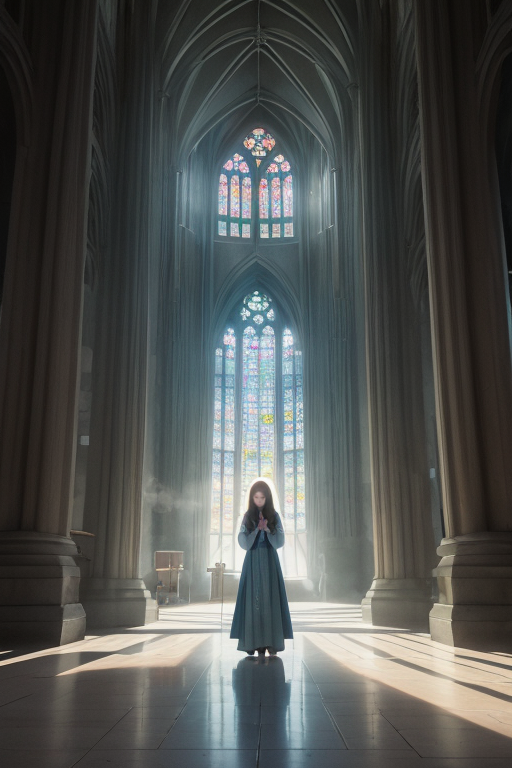
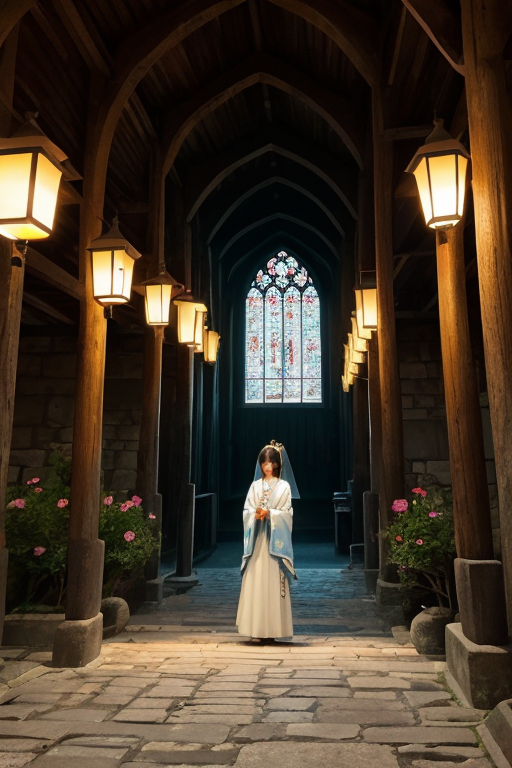
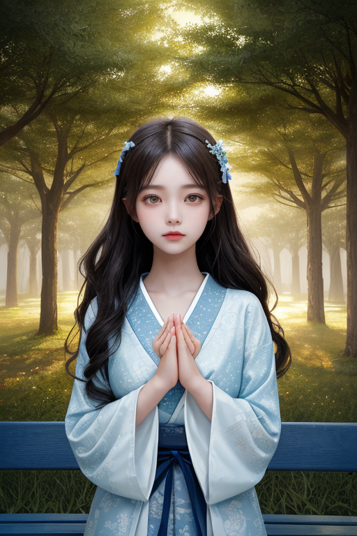

第一章 現実の長崎
あなたはまだ気づいていない。この土地にも、王がいることを。
長崎港の波は、数百年にわたる商船の往来で洗われてきた。出島の復元された黒塀の向こうでは、観光客の笑い声が混じり合う。活気に満ちた中華街の路地では、鉄鍋の音が高く響き、ちゃんぽんの湯気が人々の欲望と空腹を包み込む。金と物、言葉と文化が絶え間なく行き交う交差点。ここは常に、外からの波を受け入れ、混ぜ合わせ、新たな形で吐き出してきた町だ。
その賑わいの底で、ほんの少し、地殻が軋む。商都の活気が生み出す人の流れの圧力、積み上げられた歴史の重みが、目に見えない歪みを地中に蓄えていく。市場の喧騒も、港を吹き渡る潮風も、その微かな振動を打ち消すことはできない。
祈王ナガサキア・クロニクルは、グラバー園の坂道に佇み、静かに目を閉じた。彼の手のひらには、青と白の光で描かれた「十字光と祈円」の紋章が微かに浮かぶ。感情を持たぬはずの彼の胸に、この土地が繰り返してきた「交差」の記憶が、静かな波のように寄せては返す。

第二章 歪みの兆候
大浦天主堂の尖塔が、午後の光を白く反射させている。観光客のざわめきが石畳に溢れる中、祈王はその静寂の中心に立っていた。彼の耳には、別の音が届いていた。港のクレーンの動作音、外国語の取引の声、そして、地中深くで岩盤が微かに軋む音。商都の活気そのものが、目に見えない歪みを増幅させていた。
主席妖精クロナが、優しい光の粒となって彼の肩に舞い降りた。「祈王様、出島跡地の地下水位に、予測外の変動が生じています。過去の埋め立て地層が、現在の物流の振動に共振を起こし始めているようです」
それは、巨大な災害ではない。貿易の活発さ、人の往来の密度が、地盤の微妙なバランスを崩しつつあった。かつて異国の文化が交差したこの地は、今、経済の波と地質の記憶が複雑に絡み合い、新たな「痛み」を孕もうとしていた。
祈王はそっと息を吐いた。その吐息と共に、紋章から放たれた青白い光の輪が、地面へと静かに浸透していく。歪みを消すことはできない。ただ、その進行をほんの一瞬、遅らせる調整を施す。
「痛みは祈りに変わるか」
彼の内側で、その問いが深い慈悲の色を帯びて反響した。答えはまだ、ない。
第三章 王の葛藤
グラバー園の坂道を、観光客の笑い声が波のように流れていく。その足元で、祈王は目を閉じていた。彼の感覚は、活気に満ちた地表の下、深く沈む岩盤の軋みへと向かう。商都の欲望は地を肥やし、同時に地を重くする。新しいビルの基礎杭は、古い断層の記憶を刺激していた。彼はその歪みを感じ、微調整の光を送り続ける。
「これ以上、発展を緩めるべきか」
彼の内に、初めて迷いが生じた。王の役目は調整であって、抑制ではない。しかし、人間の求める「豊かさ」の波が、土地そのものの均衡を脅かす時、彼はただ手をこまねいているしかないのか。デジマリアが交差する文化のざわめきを緩衝し、クロナが人々の無意識の祈りを集める。それでも、増幅する欲望の質量は、妖精たちの働きだけでは吸いきれない。
彼は大浦天主堂の尖塔を遠くに望む。あの場所が嘗て受けた痛みは、確かに祈りへと昇華された。ならば、今、地中に蓄積されつつあるこの経済的な圧力の痛みは？ 答えは見えない。祈王は青白い光を掌に灯し、ただ、次の歪みが来るまで、調整を続けることを選んだ。

第四章 妖精との対話
出島の復元された石畳を、デジマリアが軽やかに歩く。その足元には、江戸期のオランダ商館の礎石と、現代の観光客の足音が、幾重にも層を成している。
「商いとは、交差点です」と彼女は言う。手にした小さな天秤が、微かに揺れる。「欲しいものと、手放せるもの。遠い国と、この島。それが等価で交わる瞬間、そこに『流れ』が生まれます。でも、流れが速すぎると、石も削れる。歪みになる」
クロナは静かに頷き、路地裏から聞こえる食器の音、店先の笑い声に耳を澄ませた。「人々の日常には、無数の小さな祈りが混ざっています。『今日も無事でありますように』『この取引が上手くいきますように』。それは欲望でもあり、願いでもある。私はそれを集め、濾過する。鋭い角を少しだけ丸めるために」
デジマリアは振り返り、祈王を見た。「痛みが祈りに変わるか？ 変わる瞬間だけを見れば、イエスです。グラバー園のバラは、荒れた海を越えた商人の孤独から咲いた。でも、変わるまでの時間が、あまりに長すぎることもある。私たちにできるのは、その『時間』の流れを、ほんの少しだけ調整すること。歪みが祈りへ至る道のりを、あまりに険しくしないために」

第五章 微調整と余韻
祈王は、平和公園の噴水前で立ち止まった。観光客のざわめき、子供たちの笑い声、そして深い静寂が、複雑な層をなして流れていた。彼は目を閉じた。ここに集う無数の祈り——鎮魂の祈り、平和への願い、明日への怯え——それらすべてが、この土地の「交差波」を形成していた。あまりに鋭すぎる波もあれば、長い時間をかけて鈍り、重くなった波もある。
クロナがそっと肩に止まった。「調整を始めます」。デジマリアは人波の中をすり抜け、一人の老人が段差でつまずきそうになるのを、ほんの少しの風で支えた。祈王は、歪みの微調整に集中する。原爆資料館を訪れた若いカップルの会話が、憎悪ではなく「なぜ？」という問いへと自然に傾くように。疲れた母親がベンチで休む瞬間、木陰がちょうど良い角度で移るように。それは救済ではない。痛みそのものを消すことは、誰にもできない。
彼が調整するのは、痛みが祈りへと変容する「過程」だ。険しすぎる坂道に、ほんの少しの段差を設ける。重すぎる荷物の紐が、ほどける一瞬を遅らせる。それだけのことだ。夕日が海を染める頃、祈王は静かに目を開けた。公園には変わらぬ祈りが満ち、人々はそれぞれの道へと帰っていく。誰も彼の働きに気づかない。それでいい。
痛みは祈りに変わるか？ 変わり続けている。この町では、今この瞬間も。
あなたの町にも、王がいる。